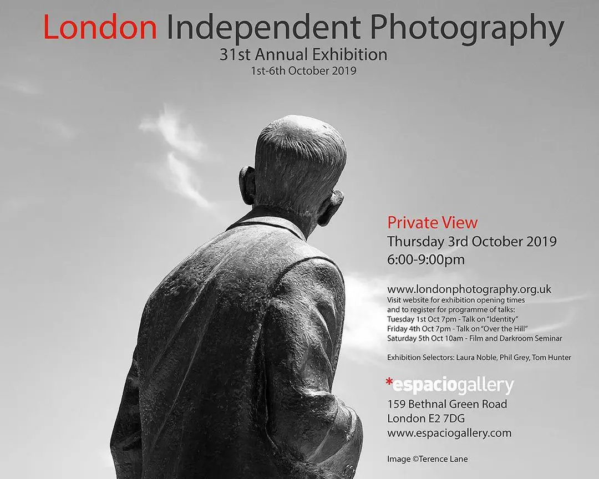
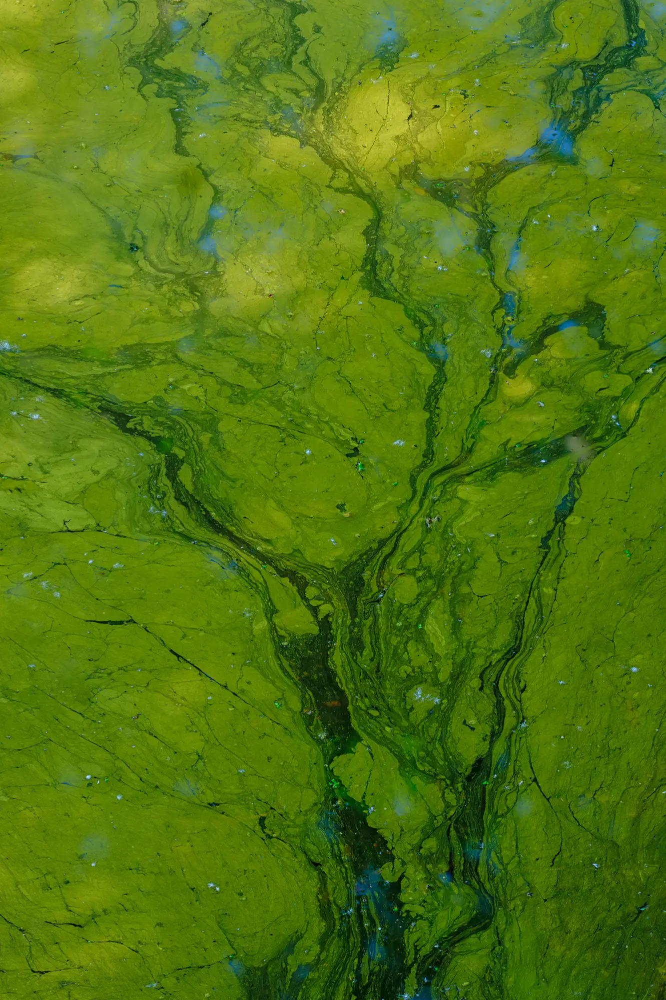

I am pleased to say that one of my images has been selected for the London Independent Photography (LIP) 31st Annual Exhibition

Exhibition Selectors: Laura Noble, Tom Hunter and Phil Grey
Exhibition: 1-6 OCTOBER 2019
Espacio Gallery
159 Bethnal Green Road
London E2 7DG
Private View: Thursday 3 October 6pm-9pm
Tube: Liverpool Street Bethnal Green
Overground: Shoreditch High Street
Bus 8: 388;
5 minutes walk from Brick Lane
Other events taking place during the week

| « next | » previous |